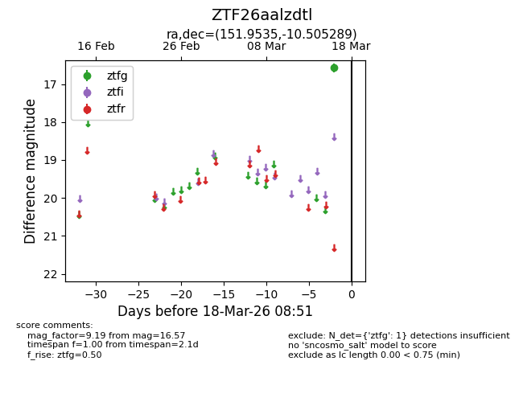
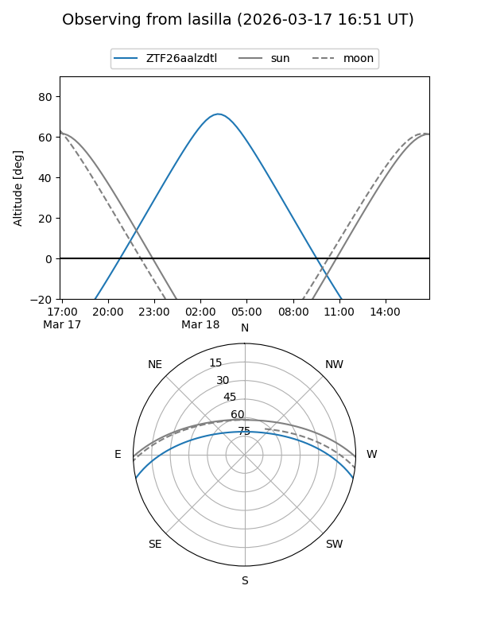
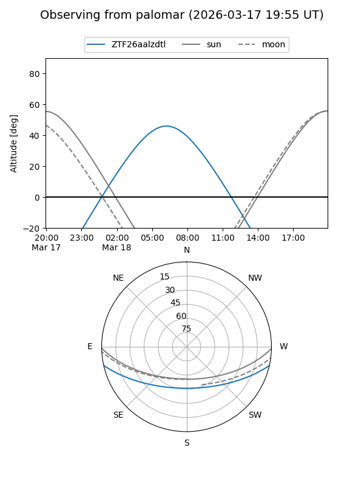

ZTF26aalzdtl
Target ZTF26aalzdtl at 2026-03-18 08:53
Aliases and brokers:
FINK: link
Lasair: link
ALeRCE: link
alt names
ZTF26aalzdtl (ztf,fink_ztf)
Coordinates:
equatorial (ra, dec) = 151.9535,-10.50529
equatorial (HMS+DMS) = 10:07:48.85,-10:30:19.04
galactic (l, b) = (250.8263,+35.32597)
Flags:
Photometry:
last ztfg=16.57
1 ztfg detections
Lightcurve

Visibility


Additional plots